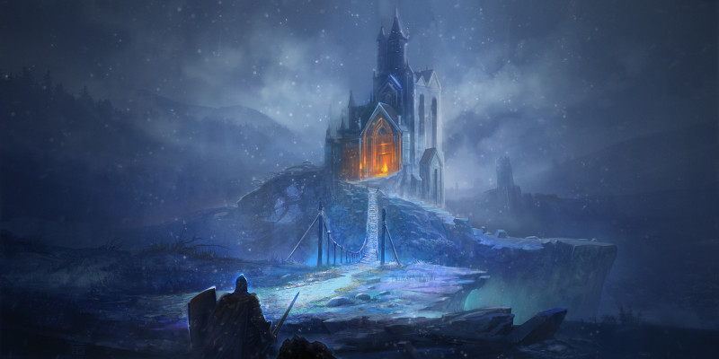
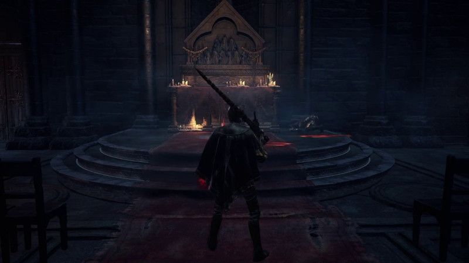
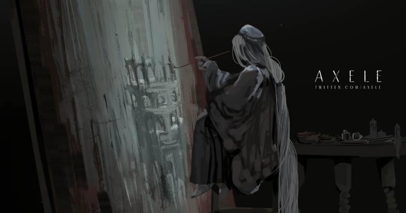
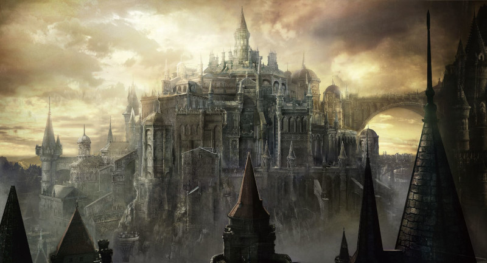
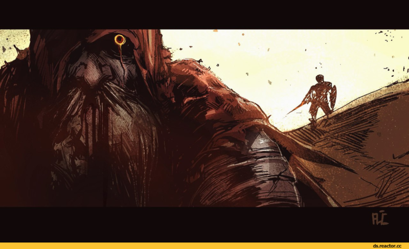
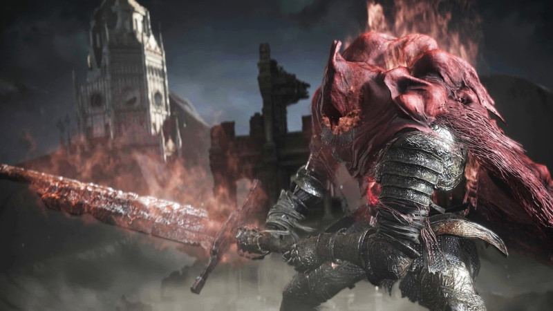

SLAVE KNIGHT GAEL
Slave Knight Gael é um chefe em Dark Souls 3. Gael está disponível na DLC The Ringed City e é considerado por muitos o chefe final da saga Dark Souls. Esse tópico irá prover informações, curiosidades, dicas e notas sobre a lore do chefe Slave Knight Gael, divirta-se!
LORE DE SLAVE KNIGHT GAEL
Origem
Gael, o Cavaleiro Escravo. Provavelmente, dada sua armadura e seu título, ele foi um soldado morto-vivo que, em sua escravidão, lutou as batalhas mais terríveis, ficando face-a-face com a loucura e, por conta disso, foi atraído para o Mundo da Pintura de Ariandel, assim como tantos outros.
PINTURA DE ARIANDEL
Na Pintura, agiu como uma espécie de figura paterna, ou mentor, à Pintora, que o chama de tio, como uma forma afetuosa de respeito. Acredita-se que ele partiu da Pintura depois que a Pintora foi trancafiada, levando consigo os restos apodrecidos do portal físico para Ariandel, tentando encontrar as Cinzas que restavam para completar o destino de Ariandel. Ser inteiramente queimado, para que a Pintora pudesse pintar um novo mundo em seu lugar. Pintar um mundo frio, sombrio e muito gentil.
GAEL ENCONTRA ASHEN ONE
Incapaz de encontrar as Cinzas restantes, Gael viajou para a Catedral das Profundezas, onde o Ashen One o encontra rezando por uma ajuda divina em sua missão. Quando ele finalmente encontra o Campeão, ele se exalta em alegria por ter concluído sua busca, solicitando que o Ashen One mostre a chama para o apodrecido Mundo de Ariandel, uma chama que queime e consuma a podridão. Uma vez que entra em contato com a peça da pintura, o Ashen One é puxado para o mundo pintado.
A PINTORA E A DARK SOUL
Na luta do Ashen One contra o Pai Ariandel e a Irmã Friede, a chama, de fato, acesa, começando a se espalhar pelo Mundo da Pintura. A Pintora comenta que ela vai, em breve, irá começar a pintar. Porém, para fazer isso, ela precisa do pigmento certo. Tal pigmento é a Dark Soul, descoberta pelo Furtivo Pigmeu no início do Fogo e usada para criar toda a humanidade. Ela menciona que Gael pretende consegui-la.
RINGED CITY
E assim começa a nova jornada do Cavaleiro Escravo Gael, rumo à Ringed City onde a missão de Gael para encontrar a Alma das Trevas o levará, onde ele finalmente conhece os Reis dos Pigmeus, cujo o sangue, aparentemente, serviria como um pigmento adequado. No entanto, para seu choque, seu sangue secou ao longo dos tempos e, portanto, era inútil para ele. Conduzida por esta revelação e determinado a completar sua missão, Gael abate os pigmeus, cortando a garganta e bebendo o sangue seco, tentando desesperadamente consumir a Dark soul para si mesmo. Mas mesmo ele percebeu que a Alma das Trevas era muito poderosa para ele lidar, e ela acabou modificando seu corpo, fazendo com que ele cresça em tamanho e deforme sua mente.
ASHEN ONE VS GAEL
Quando o Ashen One finalmente se reune com Gael, ele já foi totalmente corrompido pela Alma das Trevas e exige sua porção da Dark soul, atacando-os com raiva quando eles se recusam. Ele finalmente é derrotado, permitindo que o Ashen One obtenha seu sangue para usar como um pigmento.
ASHEN ONE VS GAEL LUTA
GAEL CONSUMIDO PELA DARK SOUL
Então é isso, se você gostou da Wiki e tem algo a acrescentar, por favor, comente nos coméntarios. Sugestões de como melhorar o site e críticas construtivas são sempre bem vindas, obrigado por acessar o nosso site!